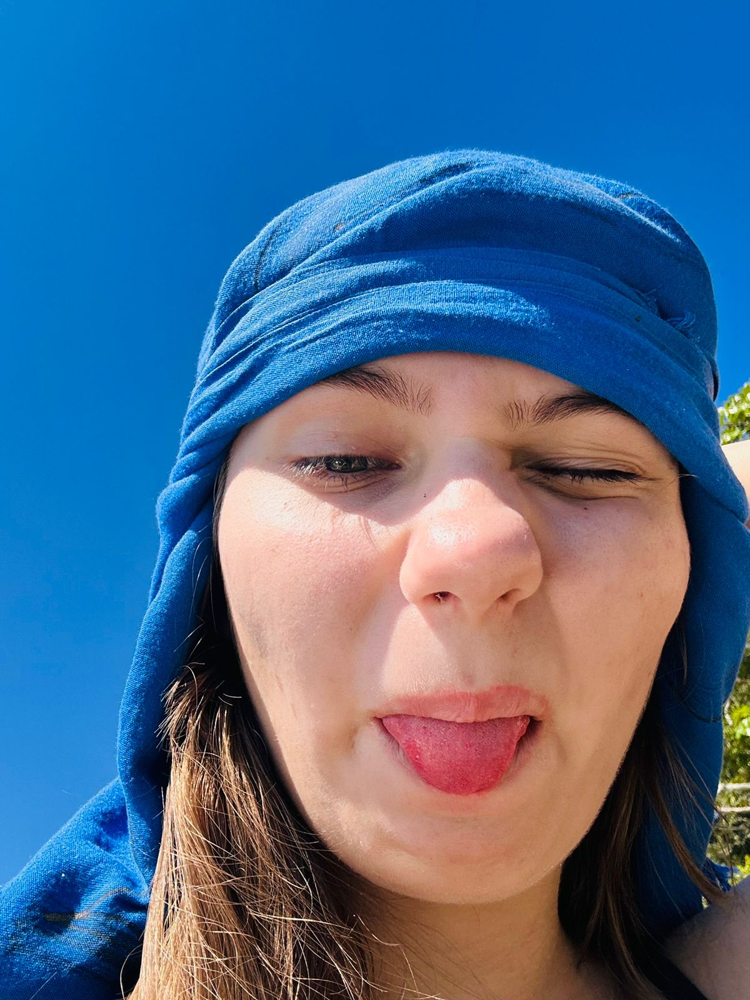
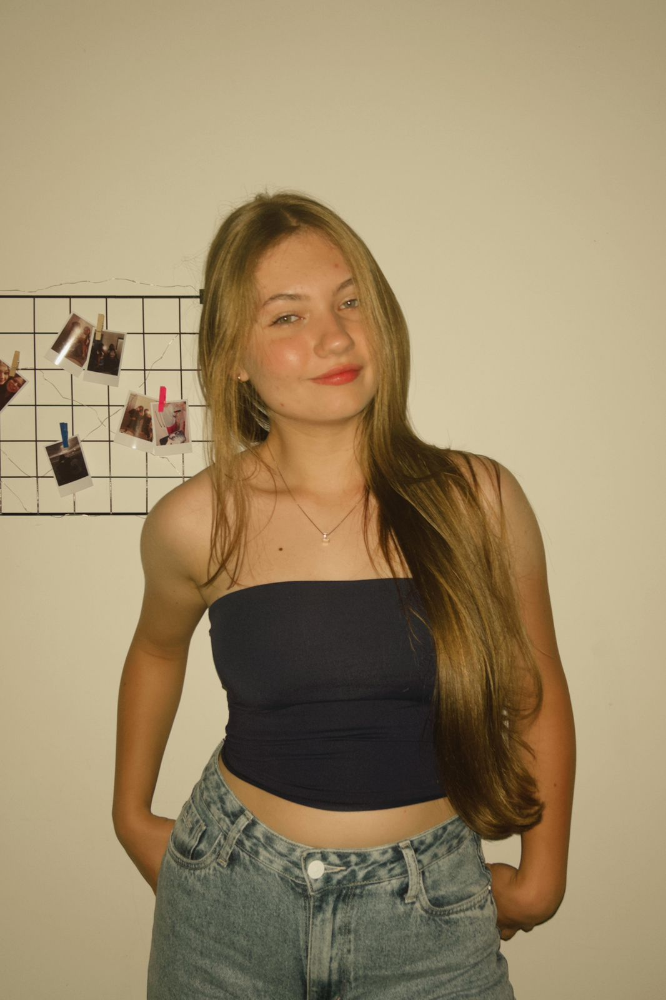
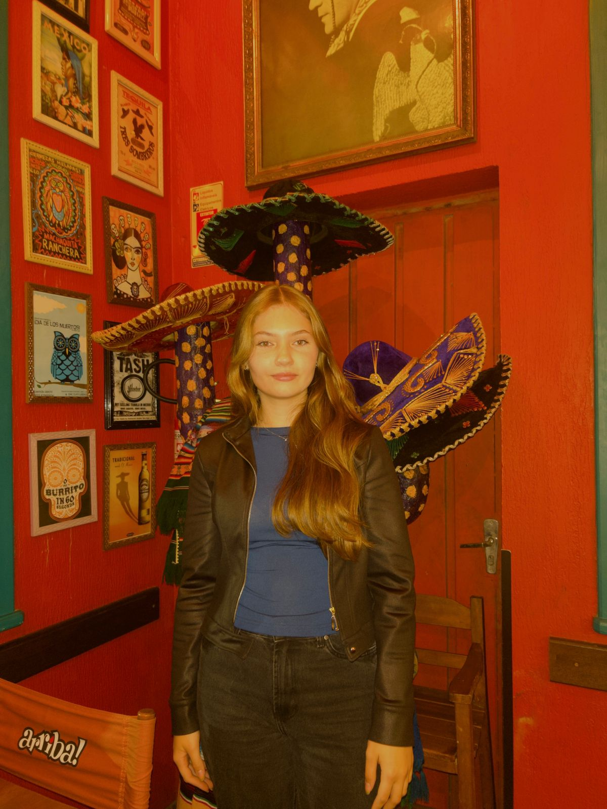

Algumas pessoas colecionam lugares.
Outras colecionam músicas.
Você parece fazer os dois.
Esta viagem foi pensada principalmente para uma tela maior. Em um computador, a experiência fica mais especial.
para Laila
Algumas pessoas colecionam lugares.
Outras colecionam músicas.
Você parece fazer os dois.

Percebi que você tem um gosto muito bom por música.

E um carinho especial pelo nosso país, que aparece em vários pequenos detalhes.

Mas acima de tudo, pelo Rio de Janeiro.
Sabendo disso, pensei em juntar tudo isso em uma pequena viagem.
A sua história não começa num lugar só.
Ela atravessa estados, memórias e sons.
Agora vamos olhar para isso de perto.
Clique em um estado
← clique em outro estado para explorar
para você guardar
Cada música que fez parte dessa viagem,
numa lista só para você.
↑ Playlist feita a mão com músicas escolhidas a dedo